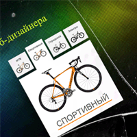

Простые модальные окна с размытым фоном на CSS3
Вкладки весьма интересная и удобная штука при создании сайта, она позволяет правильно организовать информацию, при этом сэкономив немного места на сайте. В сегодняшнем уроке речь пойдет о совмещении приятного с полезным, а именно об галереи изображений которая реализована в виде вкладок. Если вы хотите создать интернет магазин, то для отображения дополнительной информации о вашем продукте данный прием станет отличным решением.